Tutorial
Author: Juan Boubeta-Puig (juan.boubeta@uca.es)
Last updated: May 31st, 2015.
Contents
Defining, Validating and Saving a CEP Domain
The first step of our model-driven approach is the CEP domain definition by the domain expert. To cope with this task, two options are possible:
- Automatically obtaining the CEP domain graphical model from inferring the types of event flowing the SOA 2.0.
- Manually designing the CEP domain graphical model by using the CEP domain editor or even the event pattern editor.
In this tutorial, we have chosen the manual design of the CEP domain model for the network security case study:
- Select CEP Domain > New....
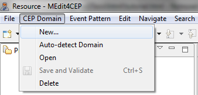
- Give the CEP Domain the name network-analysis and the description CEP domain for the network security case study. Then, click the OK button.
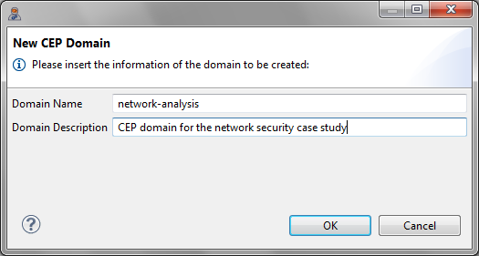
- Drag and drop an Event tool directly into the canvas.
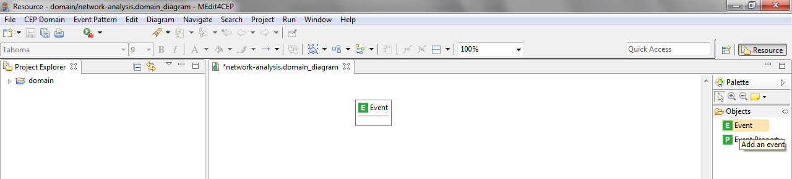
- Give the event type the name sniffer.header.parsed.
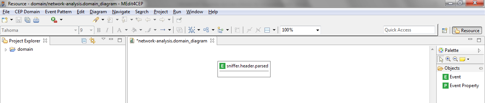
- Double-click on the event type name. Then, the property view (lower panel) for adding or editing information related to the Event will be open.
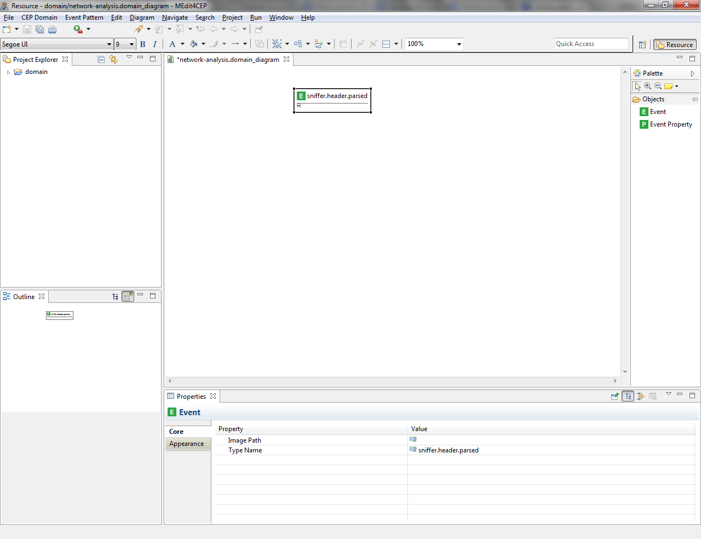
- Customize the event type icon by selecting the path to the new image in the property view.
Make sure that the icon file is readable by the editor. Otherwise, move the icon file to a readable directory and change the path, for example C:\Users\<username>\MEdit4CEP-tutorial\.
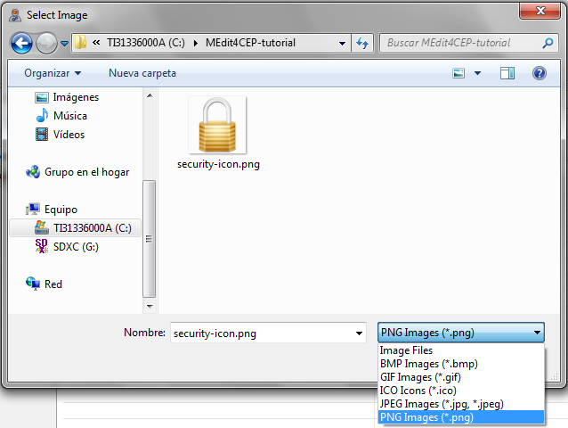
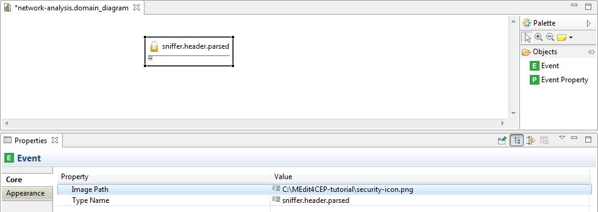
- Drag and drop an EventProperty tool into the sniffer.header.parsed event.
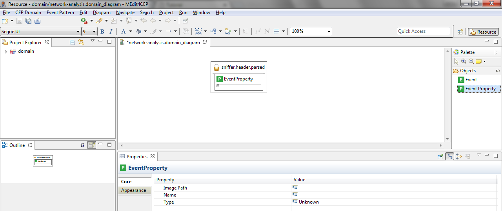
- Give the event property the name ts and select Long as its type.
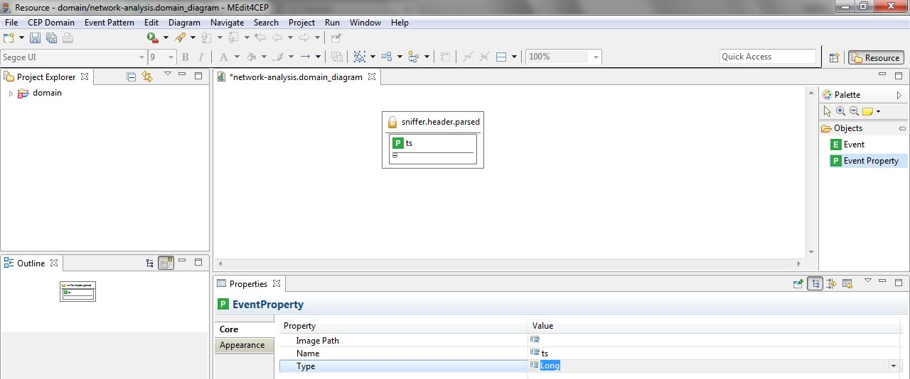
- As explained before, add the following event properties to the sniffer.header.parsed event: ipId, ipVer, ipSrc, ipDst, ipTtl, ipChecksum, icmpType, icmpEchoSeq, ethSrc, ethDst, udpSrc, udpDst, arpSourceIp, arpTargetIp, arpSourceMac, arpTargetMac, arpOpDesc, tcpSrc, tcpDst, tcpAck, tcpSeq, tcpFlags, tcpTsval, tcpTsecr and len.
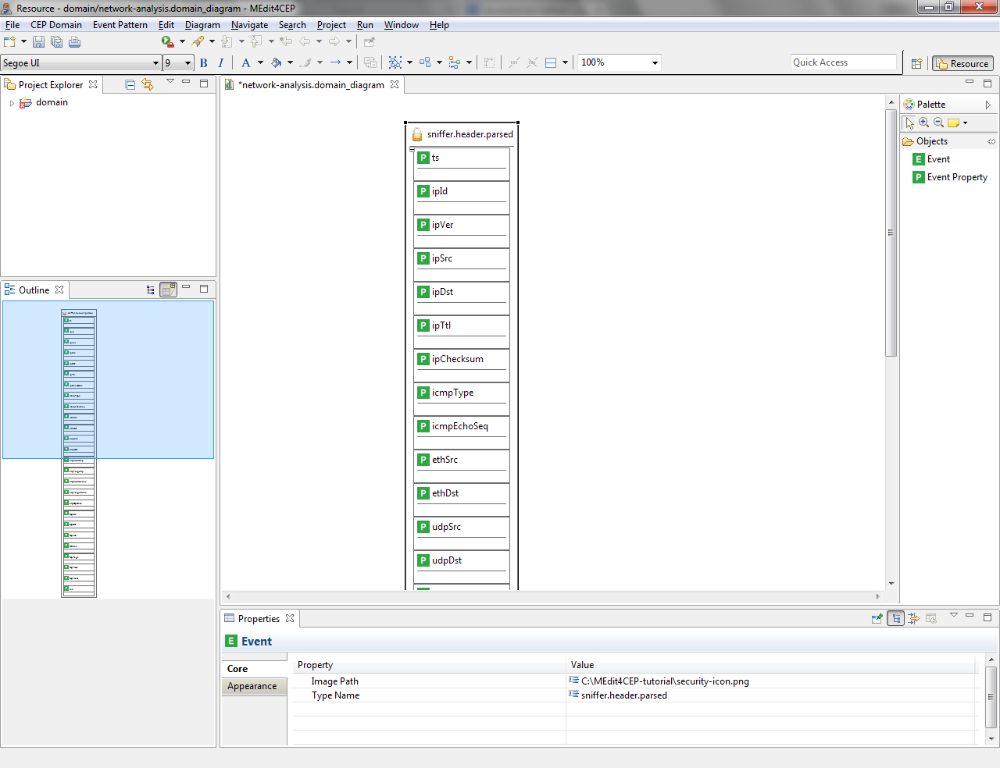
As a result, this domain contains the sniffer.header.parsed event type along with its event properties: ts (timestamp for captured packet), ipSrc (IP source address), ipDst (IP destination address) and icmpType (ICMP type: echo request or echo reply), among others. Moreover, the domain name has been set to network-analysis, a textual description has been indicated for the domain and a customized icon has been assigned to the event type, improving usability.
Once designed the network analysis domain, it must be automatically validated and stored:
- Select CEP Domain > Save and Validate.
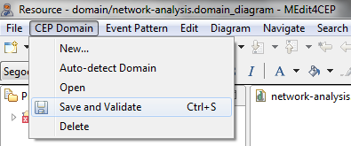
The figure below shows that there are some problems that must be solved before saving the domain.
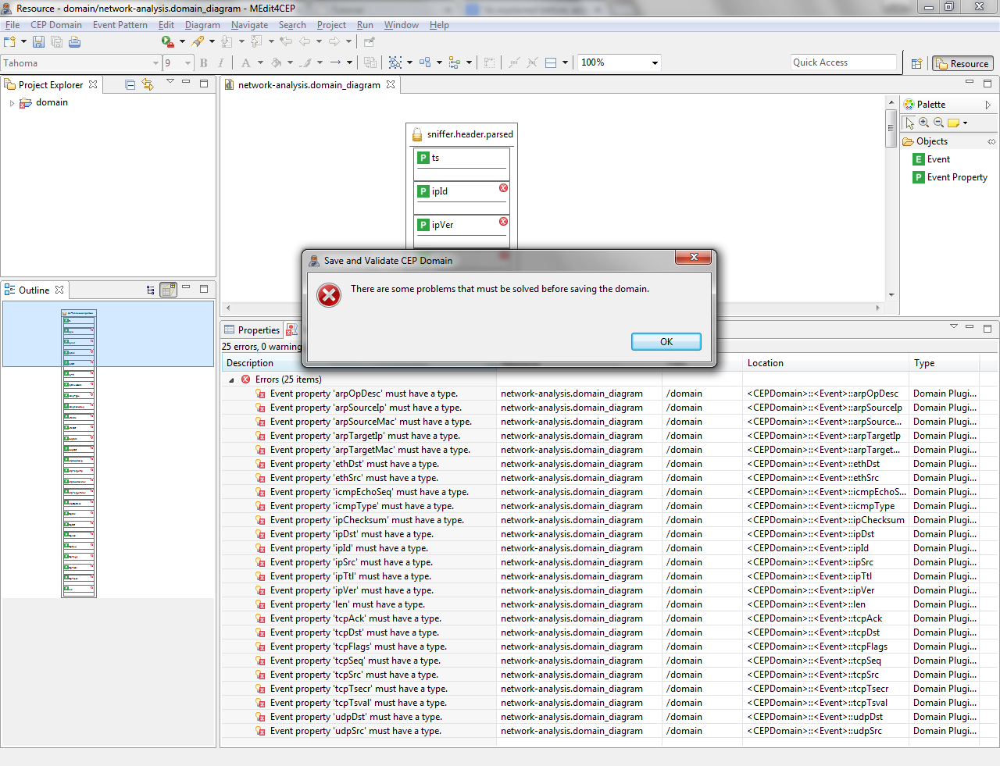
- Select a type for each event property in order to solve these problems:
Long (len, ipVer, ipId, ipTtl, ipChecksum, icmpEchoSeq, tcpSrc, tcpDst, tcpAck, tcpSeq, tcpFlags, tcpTsval, tcpTsecr, udpDst, udpSrc) and
String (ethSrc, ethDst, arpOpDesc, arpTargetMac, arpTargetIp, arpSourceMac, arpSourceIp, ipSrc, ipDst, icmpType).
- Select again CEP Domain > Save and Validate. If all errors have been corrected, a message will be shown indicating that the domain has been correctly saved and validated.
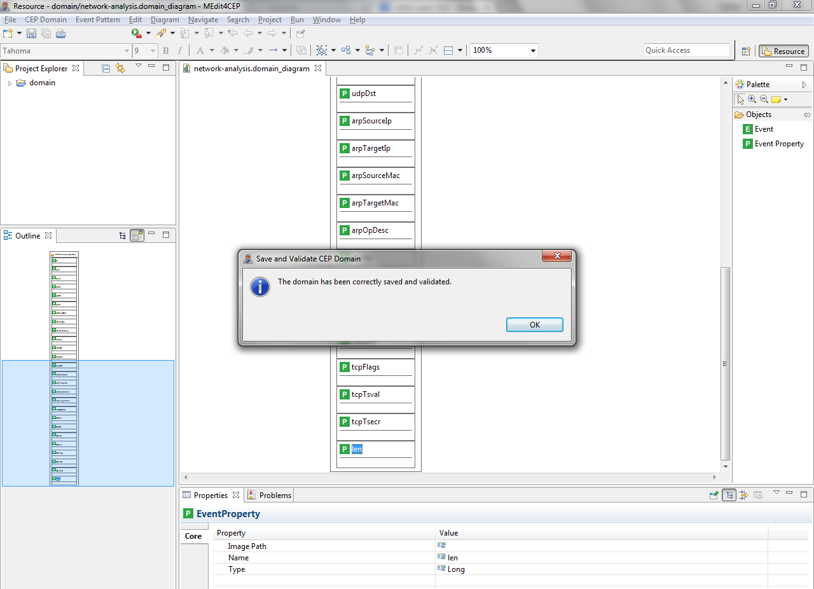
Defining, Validating, Saving and Transforming Event Patterns to Code
Once created the network analysis domain, we are going to model the following event pattern for this domain by using the event pattern editor:
- Name: icmp_echo_request.
- Description: this pattern allows us to detect a control message sent to a host with the purpose of receiving an echo-reply message from it.
- Pattern condition: the value of the icmpType property of a sniffer.header.parsed event must be equal to the echo request value.
- New complex event: icmp_echo_request. A new complex event will be created with the following properties: timestamp (the timestamp in nanoseconds –the ts property– of the sniffer.header.parsed event), source (its value must equal the ipSrc property of the sniffer.header.parsed event) and destination (its value must equal the ipDst property of the sniffer.header.parsed event).
- Action: email. Each new icmp_echo_request complex event, which is created when the event pattern condition is satisfied, will be sent to the email address(es) specified in the to attribute in the Email component. To that end, the from address, host, port, username and password, as well as the subject –for example, Alert: ICMP Echo Request–, must be indicated.
- Select Event Pattern > New....
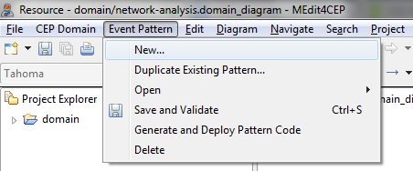
- Give the event pattern the name icmp_echo_request and the description This pattern allows us to detect a control message sent to a host with the purpose of receiving an echo-reply message from it. Then, click the OK button.
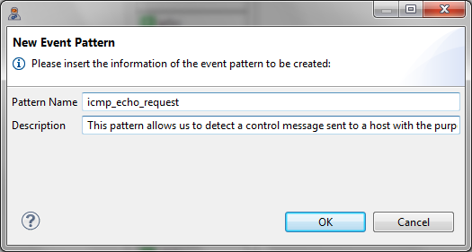
- At this moment, the event pattern editor will be automatically reconfigured for the network analysis domain, i.e. the sniffer.header.parsed event type will be added as a tool in the Simple Events category of the editor palette. This means that end users do not have to worry about how to define event types and their properties, since these are graphically represented when dragging and dropping the tool. In addition, they cannot modify given event types, avoiding the creation of incorrect event patterns for the same domain.
Then, the icmp_echo_request event pattern is created.

- Drag and drop the sniffer.header.parsed simple event directly into the canvas.
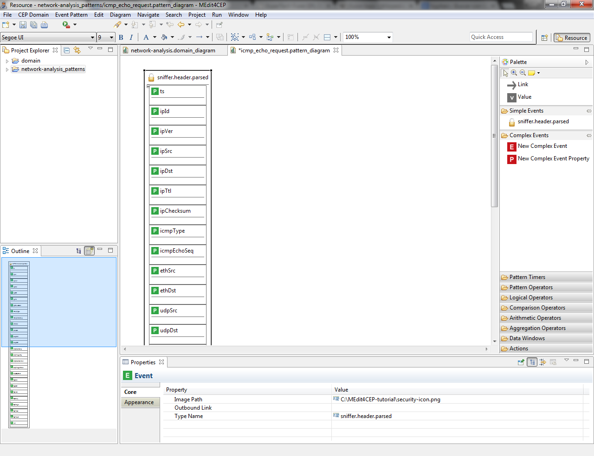
- Select the Link tool and link the icmpType property to the Equal comparison operator.
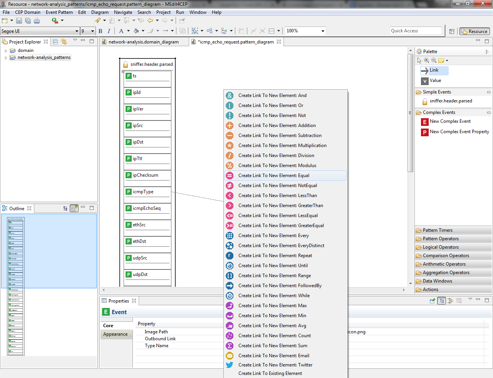
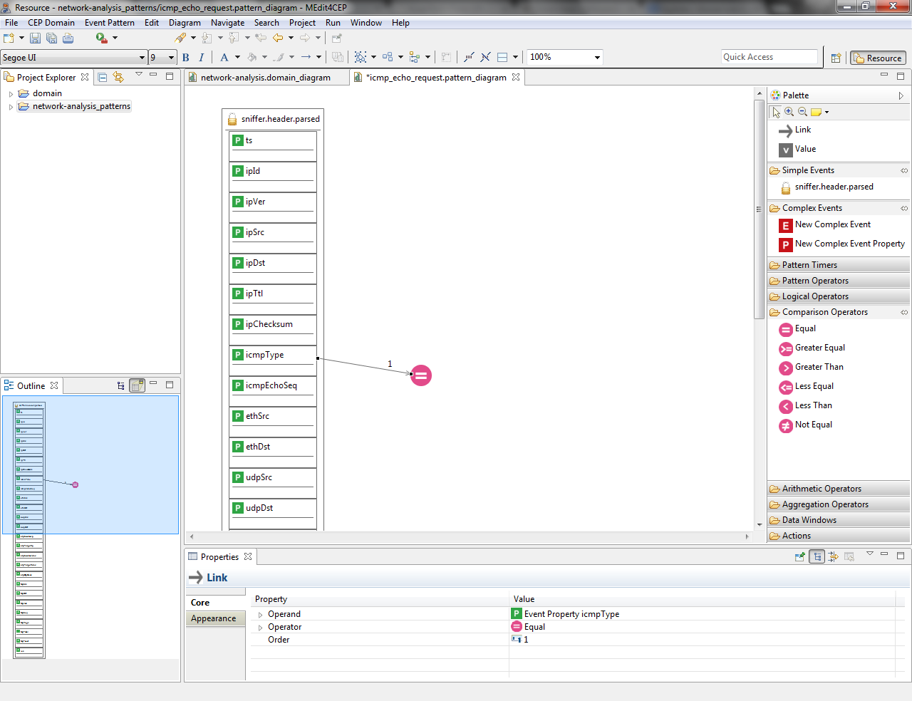
- Drag and drop the Value tool directly into the canvas. Then, give it the value echo request and select String as value type.
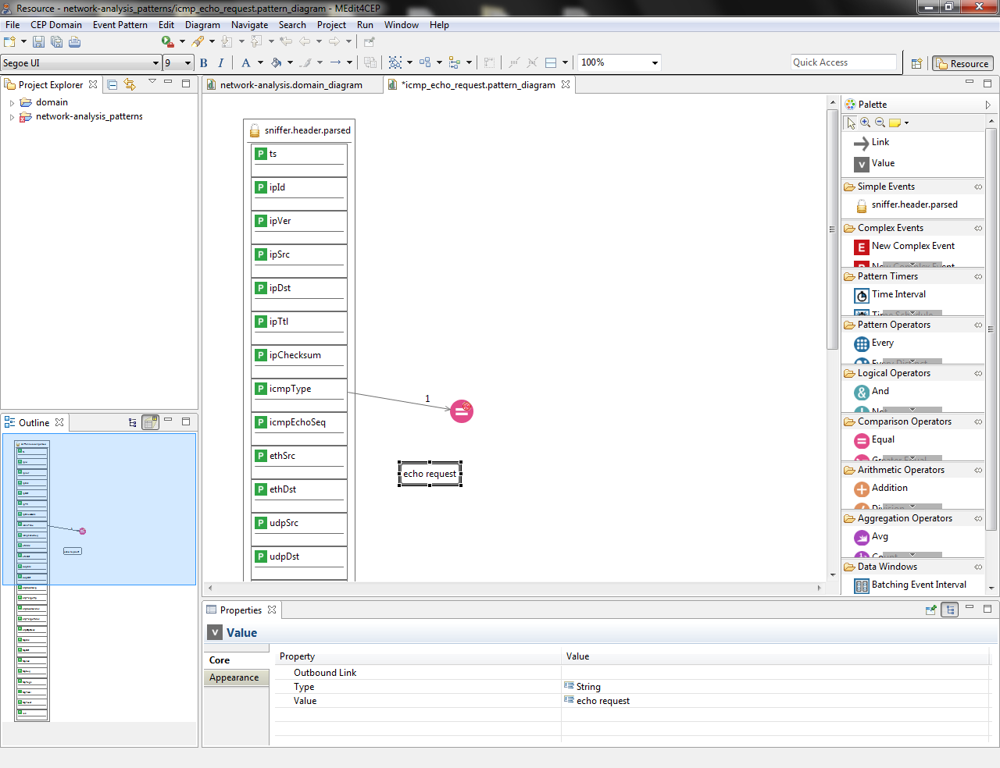
- Link the Value to the Equal operator. Notice that link orders have been automatically generated by the editor, but they can be manually modified.
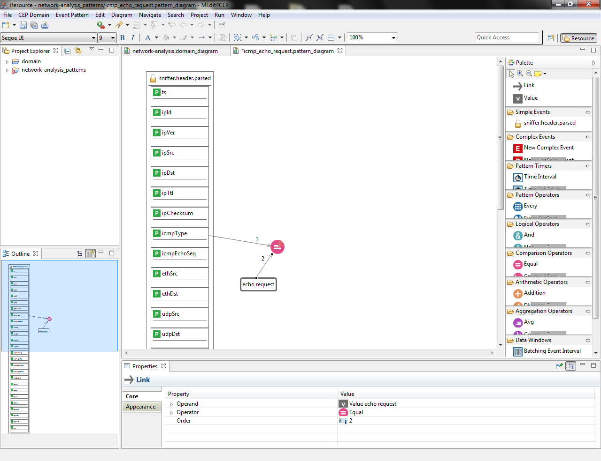
- Check if the current modeled pattern is correct by selecting Event Pattern > Save and Validate.
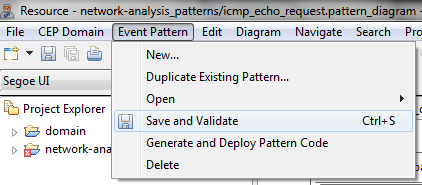
The figures below indicate that there is a problem that must be solved before saving the event pattern.
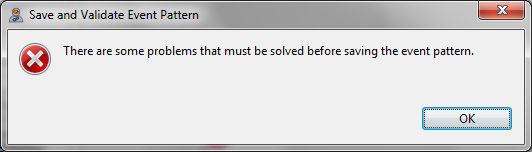
- Drag and drop the New Complex Event tool into the canvas in order to solve the event pattern error.
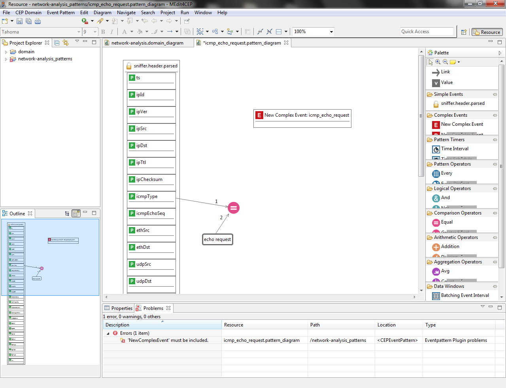
- Drag and drop a New Complex Event Property tool into the New Complex Event per property to be created for this complex event: timestamp, source and destination.
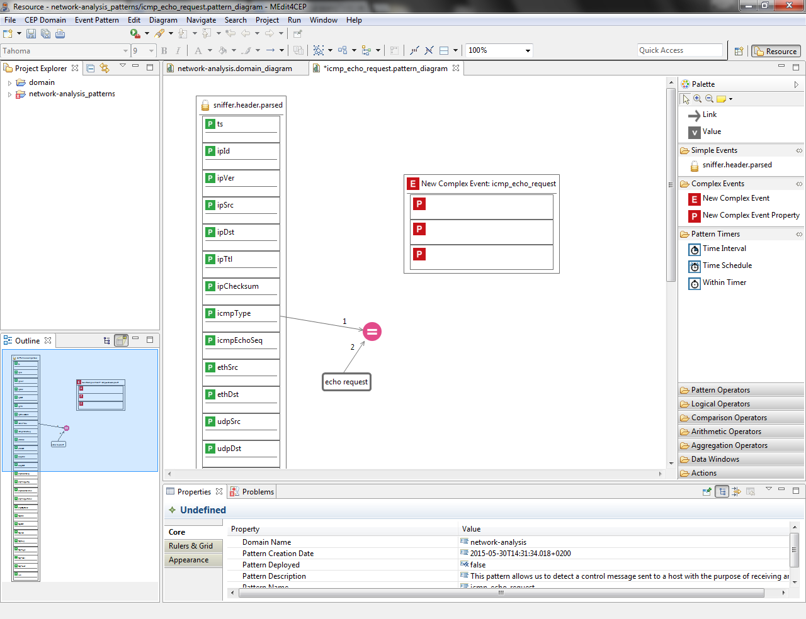
- Link the ts property to the first complex event property, link ipSrc to the second complex event property and link ipDst to the third complex event property. The figure below shows that the complex event properties have been automatically named.
- Rename the complex event properties as follows: timestamp, source and destination.
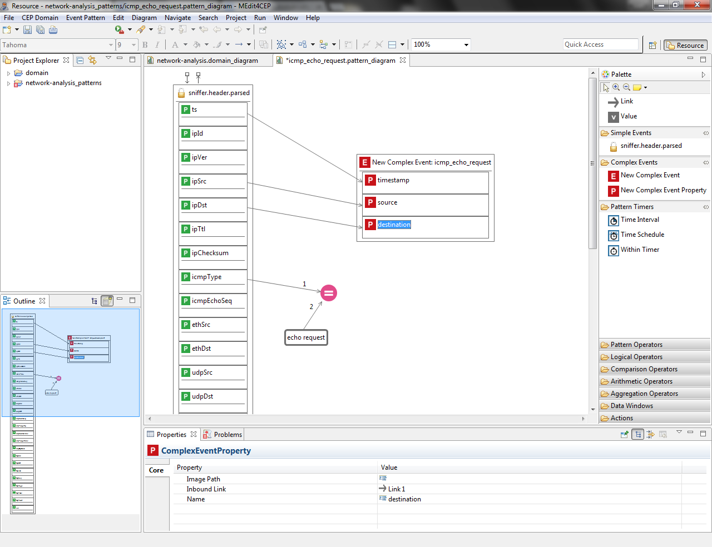
- Drag and drop an Email tool into the canvas and link the New Complex Event to the Email. Then, set value to the Email properties as shown in the following figure:
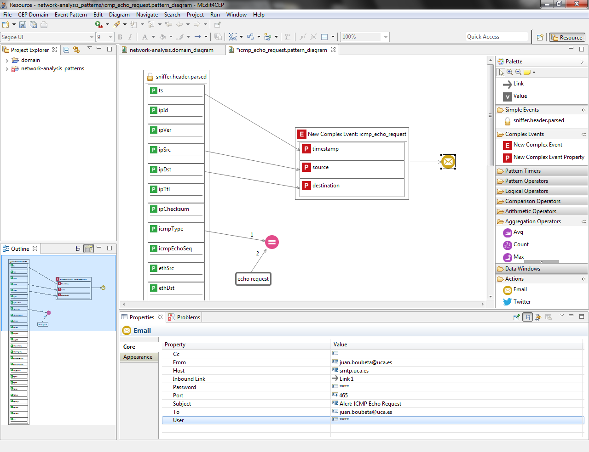
- Customize the complex event type icon by selecting the path to the new image in the property view.
Make sure that the icon file is readable by the editor. Otherwise, move the icon file to a readable directory and change the path, for example C:\Users\<username>\MEdit4CEP-tutorial\.
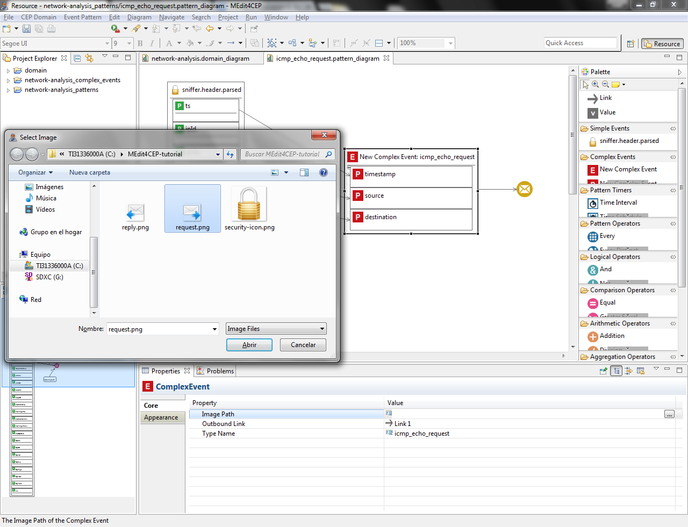
- Check again if the current modeled pattern is correct by selecting Event Pattern > Save and Validate. The figure below indicates that the event pattern has been correctly validated and saved.
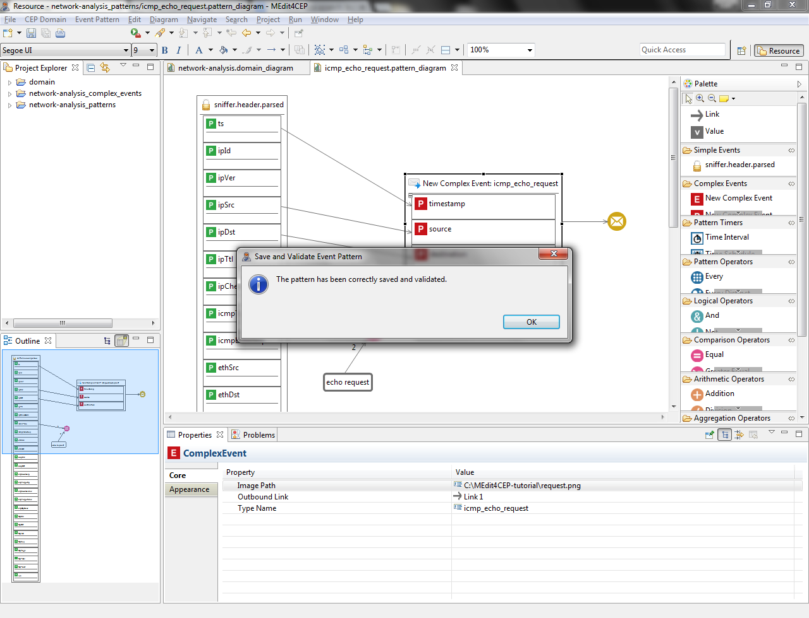
- After designing, validating and saving the event pattern, both the EPL code to be added in the Esper CEP engine at runtime as well as the XML code for actions to be carried out in a Mule ESB can be automatically generated by the event pattern editor. To do that, select Event Pattern > Generate and Deploy Pattern Code.
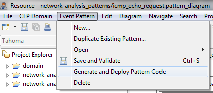
- Choose a folder where to save the generated event pattern EPL code, as shown in the figure below:

In addition, choose a folder where to save the generated action code, as shown in the following figure:
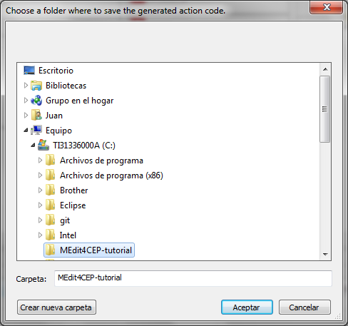
- As a result, a file .epl will be created per event pattern and, if the pattern contains actions, another file .action.
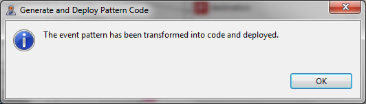
In order to illustrate the generated files we show those generated for the ICMP echo request pattern in the following lines. The implementation of the ICMP echo request pattern in EPL is as follows:
@Name('icmp_echo_request')
insert into icmp_echo_request
select a1.ts as timestamp,
a1.ipSrc as source,
a1.ipDst as destination
from sniffer.header.parsed a1
where a1.icmpType = 'echo request'
First of all, the from clause indicates for which event type –sniffer.header.parsed– the pattern condition must be evaluated, assigning the a1 alias to this type. The condition –the value of the icmpType property of a sniffer.header.parsed event must be equal to the echo request value– is specified by using the where clause. Next, event properties to be selected from the events matching the pattern condition are specified: timestamp, IP source and IP destination. Then, a complex event along with its properties –icmp_echo_request(timestamp, source, destination)– is created and inserted into a new Esper event flow named exactly as the complex event, namely icmp_echo_request.
In addition, the implementation of the action for this pattern in XML is as follows:
<?xml version="1.0" encoding="UTF-8"?>
<mule xmlns: [...]
xsi:schemaLocation= [...] >
<flow name="icmp_echo_request">
<processor-chain>
<set-payload value="Detected Alert '#[message.inboundProperties['eventPatternName']]':
#[payload]" doc:name="Set Email Body"/>
<smtps:outbound-endpoint host="smtp.uca.es" port="465" user="****" password="****"
to="juan.boubeta@uca.es" from="juan.boubeta@uca.es" cc="" subject="Alert: ICMP Echo Request"
responseTimeout="3000" doc:name="SMTP"/>
</processor-chain>
</flow>
</mule>
The first line of this action file is the XML declaration followed by the Mule namespace and XML schema declarations. Next, a new Mule flow named equal to its corresponding event pattern –icmp_echo_request– is presented. This flow is composed of both a set payload transformer for setting the concrete format for the email payload to be sent –containing the complex event received in the Mule flow called ComplexEventReceptionAndDecisionMaking– and a SMTP connector that makes sending complex events (alerts) as emails possible.
Duplicating an Existing Event Pattern
In this section, we are going to model the following event pattern for the network analysis domain by using the event pattern editor:
- Name: icmp_echo_reply.
- Description: this pattern allows us to detect a control message generated as a response to an echo-request message.
- Pattern condition: the value of the icmpType property of a sniffer.header.parsed event must be equal to the echo reply value.
- New complex event: icmp_echo_reply. A new complex event will be created with the following properties: timestamp (the timestamp in nanoseconds –the ts property– of the sniffer.header.parsed event), source (its value must equal the ipSrc property of the sniffer.header.parsed event) and destination (its value must equal the ipDst property of the sniffer.header.parsed event).
- Action: email. Each new icmp_echo_reply complex event will be sent to the email address(es) specified in the to attribute in the Email component.
Since this event pattern is similar to the icmp_echo_request pattern designed before, we are not going to create the new pattern from scratch, but to duplicate the existing one and modify it according to its description.
- Select Event Pattern > Duplicate Existing Pattern....
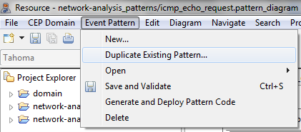
- Give the event pattern the name icmp_echo_reply and the description This pattern allows us to detect a control message generated as a response to an echo-request message. Then, click the OK button.
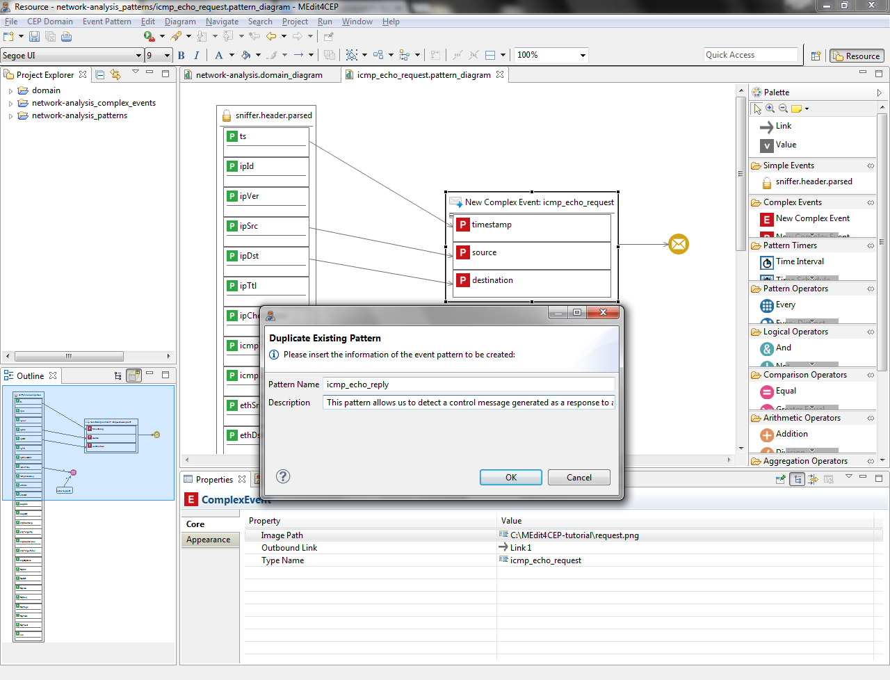
- The figure below depicts the duplicated pattern. As it can been seen, the event pattern editor has been automatically reconfigured adding the icmp_echo_request complex event type as a tool in the Complex Events category of the editor palette. This allows end users to be able to graphically define an event pattern hierarchy by dragging and dropping previously added tools from the Complex Events category into a new event pattern model.
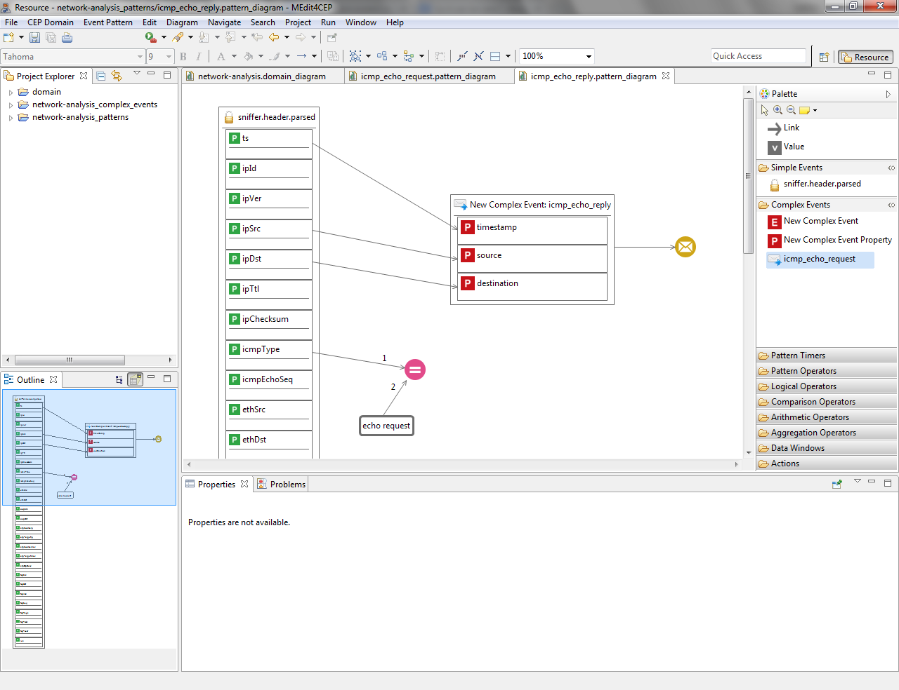
- Replace echo request by echo reply Value, which is linked to the Equal operator.
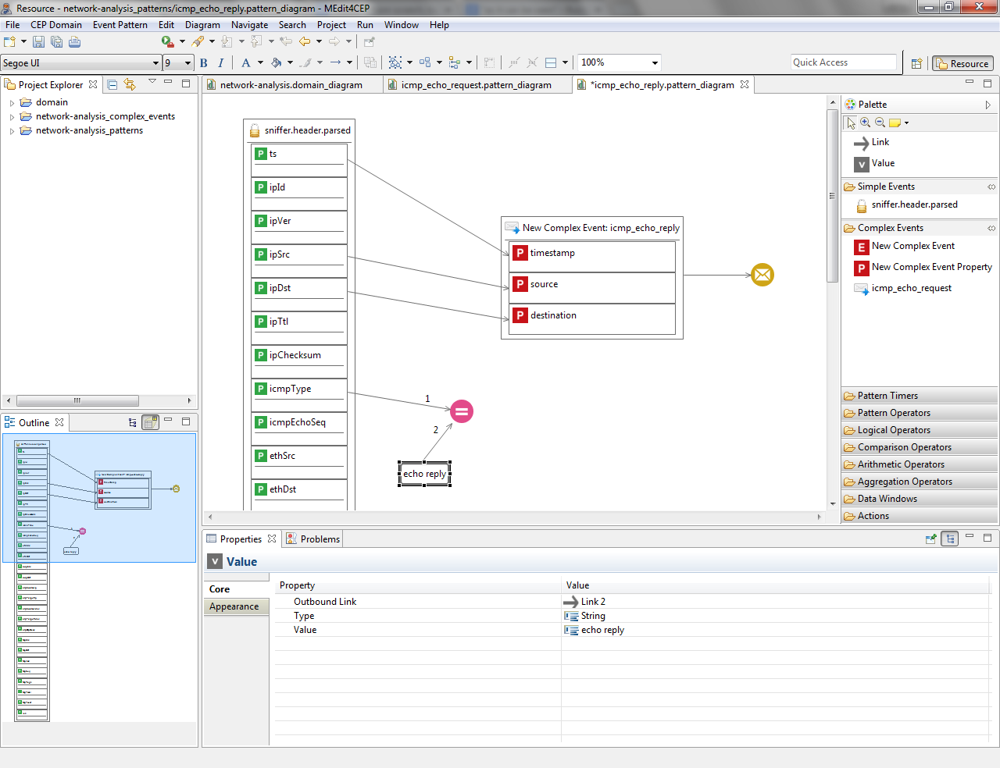
- Replace Alert: ICMP Echo Request by Alert: ICMP Echo Reply email subject.
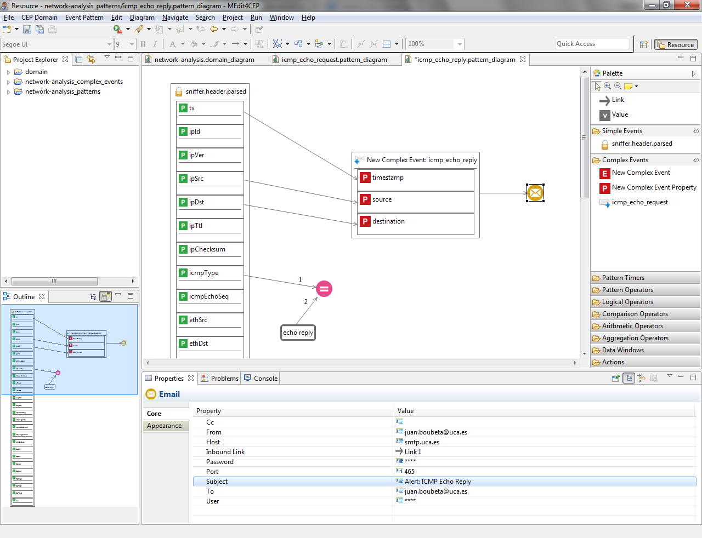
- Customize the complex event type icon by selecting the path to the new image in the property view.
Make sure that the icon file is readable by the editor. Otherwise, move the icon file to a readable directory and change the path, for example C:\Users\<username>\MEdit4CEP-tutorial\.
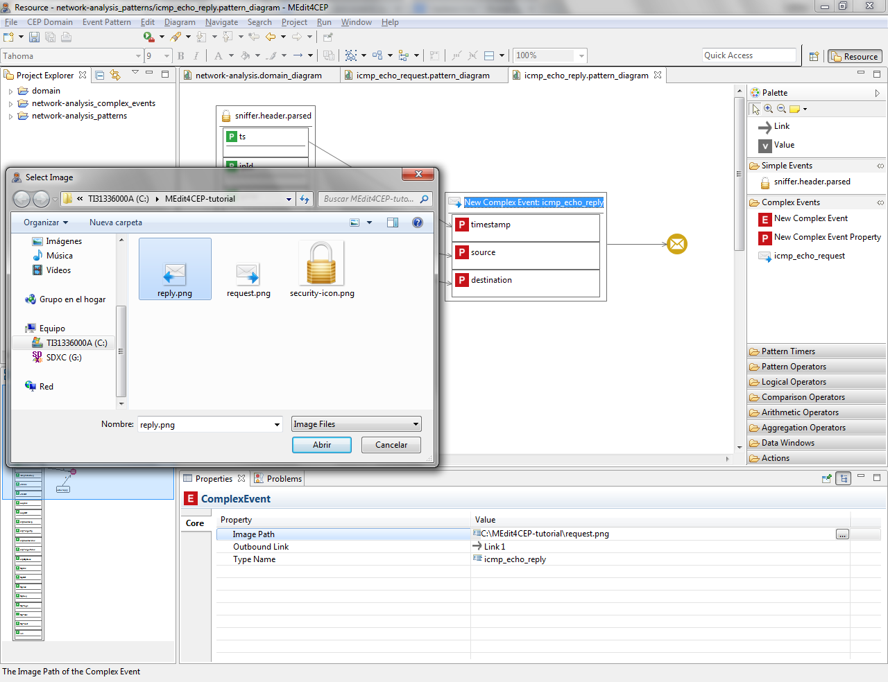
- Check if the current modeled pattern is correct by selecting Event Pattern > Save and Validate. The figure below indicates that the event pattern has been correctly validated and saved.
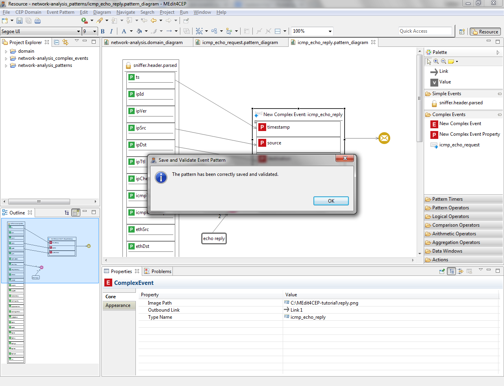
- Select Event Pattern > Generate and Deploy Pattern Code.
The implementation of the ICMP echo reply pattern in EPL is as follows:
@Name('icmp_echo_reply')
insert into icmp_echo_reply
select a1.ts as timestamp,
a1.ipSrc as source,
a1.ipDst as destination
from sniffer.header.parsed a1
where a1.icmpType = 'echo reply'
Besides, the implementation of the action for this pattern in XML is as follows:
<?xml version="1.0" encoding="UTF-8"?>
<mule xmlns: [...]
xsi:schemaLocation= [...] >
<flow name="icmp_echo_reply">
<processor-chain>
<set-payload value="Detected Alert '#[message.inboundProperties['eventPatternName']]':
#[payload]" doc:name="Set Email Body"/>
<smtps:outbound-endpoint host="smtp.uca.es" port="465" user="****" password="****"
to="juan.boubeta@uca.es" from="juan.boubeta@uca.es" cc="" subject="Alert: ICMP Echo Reply"
responseTimeout="3000" doc:name="SMTP"/>
</processor-chain>
</flow>
</mule>
Creating an Event Pattern Hierarchy
In this section, we are going to model the following event pattern for the network analysis domain by using the event pattern editor:
- Name: icmp_ping_response_time.
- Description: this pattern allows us to calculate the temporal difference between the occurrence of an ICMP echo request message and an ICMP echo reply message.
- Pattern conditions:
- Every icmp_echo_request complex event –generated by the icmp_echo_request pattern– is followed by an icmp_echo_reply complex event, generated by the icmp_echo_reply pattern.
- Additionally, the value of the source property of the icmp_echo_reply complex event is equal to the destination property of the icmp_echo_request complex event, and the value of the destination property of the icmp_echo_reply event is equal to the source property of the icmp_echo_request event.
- New complex event: icmp_ping_response_time. A new complex event will be created with the following properties: requestTimestamp (the value of the timestamp property of the icmp_echo_request complex event), responseTimestamp (the value of the timestamp property of the icmp_echo_reply complex event), time (the timestamp difference between the icmp_echo_reply and icmp_echo_request complex events), source (the value of the source property of the icmp_echo_request complex event) and destination (the value of the destination property of the icmp_echo_request complex event).
- Action: email. Each new icmp_ping_response_time complex event will be sent to the email address(es) specified in the to attribute in the Email component.
Since this event pattern depends on icmp_echo_request and icmp_echo_reply patterns, an event pattern hierarchy must be created by using the event pattern editor.
- Select Event Pattern > New....
- Give the event pattern the name icmp_ping_response_time and the description This pattern allows us to calculate the temporal difference between the occurrence of an ICMP echo request message and an ICMP echo reply message. Then, click the OK button.
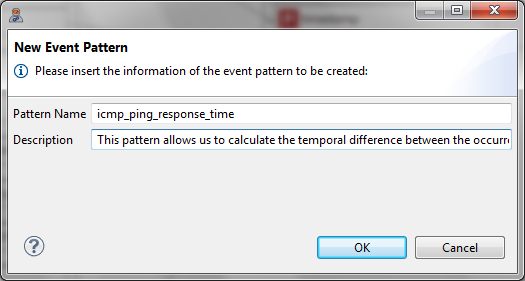
- The figure below depicts the new pattern. As it can been seen, the event pattern editor has been automatically reconfigured adding the icmp_echo_reply complex event type as a tool in the Complex Events category of the editor palette. This allows end users to be able to graphically define an event pattern hierarchy by dragging and dropping previously added tools from the Complex Events category into a new event pattern model.
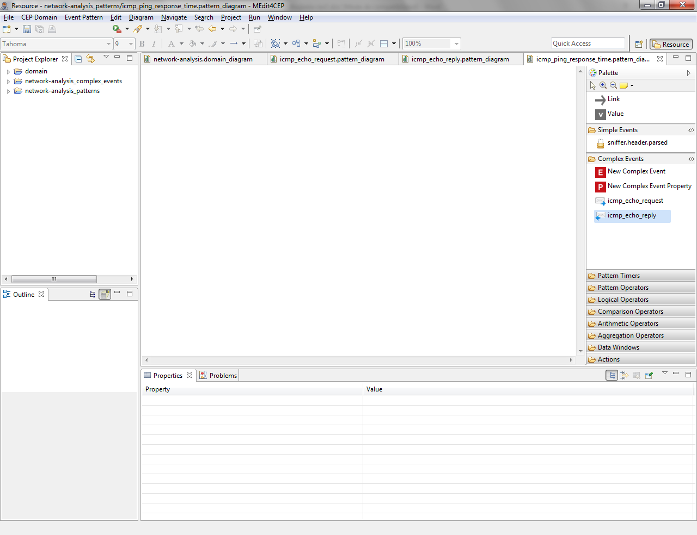
- Design the icmp_ping_response_time pattern by using the palette tools as illustrated in the following figure. Notice that this pattern has been designed thanks to the use of the icmp_echo_request and icmp_echo_reply tools that were automatically added to the Complex Events category after modeling the icmp_echo_request and icmp_echo_reply patterns.
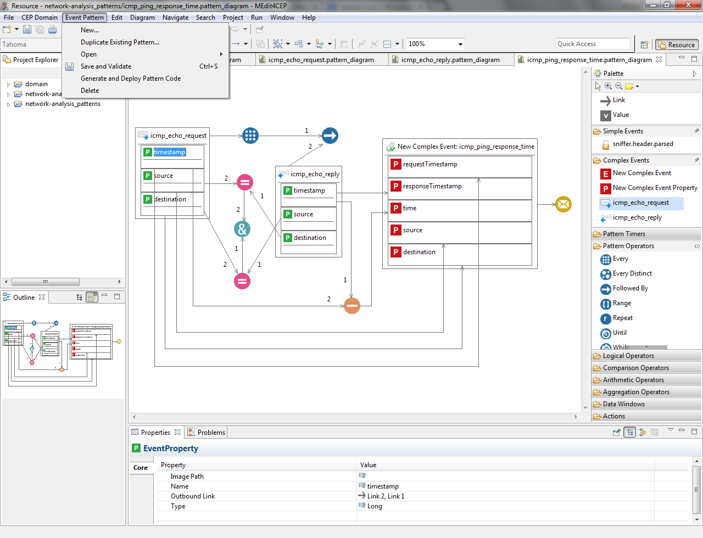
- Validate, save and transform the pattern to code.
The implementation of the ICMP ping response time pattern in EPL is as follows:
@Name('icmp_ping_response_time')
insert into icmp_ping_response_time
select a1.timestamp as requestTimestamp,
a2.timestamp as responseTimestamp,
(a2.timestamp - a1.timestamp) as time,
a1.source as source,
a1.destination as destination
from pattern [(every a1 = icmp_echo_request ->
a2 = icmp_echo_reply((a2.source = a1.destination and a2.destination = a1.source)))]
Moreover, the implementation of the action for this pattern in XML is as follows:
<?xml version="1.0" encoding="UTF-8"?>
<mule xmlns: [...]
xsi:schemaLocation= [...] >
<flow name="icmp_ping_response_time">
<processor-chain>
<set-payload value="Detected Alert '#[message.inboundProperties['eventPatternName']]':
#[payload]" doc:name="Set Email Body"/>
<smtps:outbound-endpoint host="smtp.uca.es" port="465" user="****" password="****"
to="juan.boubeta@uca.es" from="juan.boubeta@uca.es" cc="" subject="Alert: ICMP Ping Response Time"
responseTimeout="3000" doc:name="SMTP"/>
</processor-chain>
</flow>
</mule>
Exporting the CEP Domain and Event Patterns
In this section, we are going to export the modeled CEP domain and event patterns so as to be reused and shared with other users.
- Select File > Export Event Patterns....
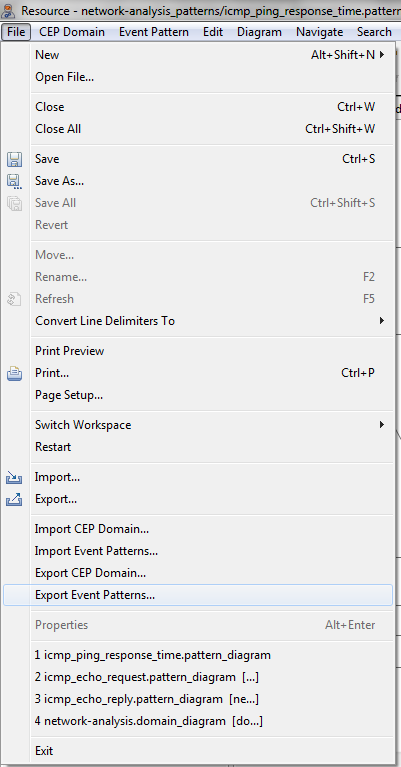
- Choose a folder where to export the event patterns.
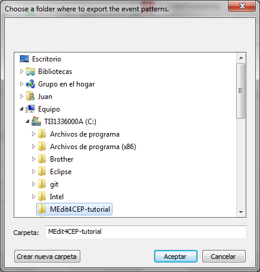
- The figure below indicates that the exportation has been done.
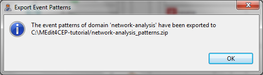
- As a result, the network-analysis_patterns.zip has been created. It contains the modeled event patterns together with their modeled CEP domain. Notice that these patterns may be imported in the event pattern editor by selecting File > Import Event Patterns....